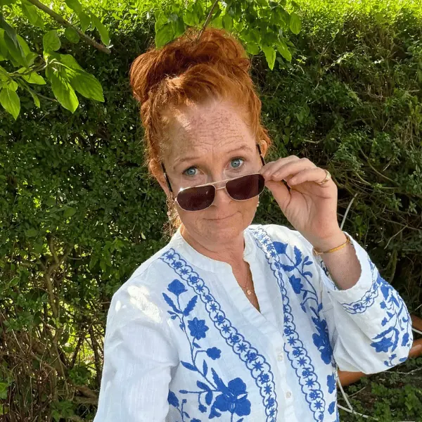
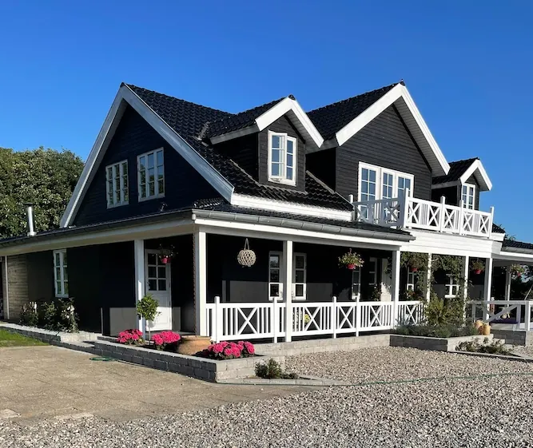
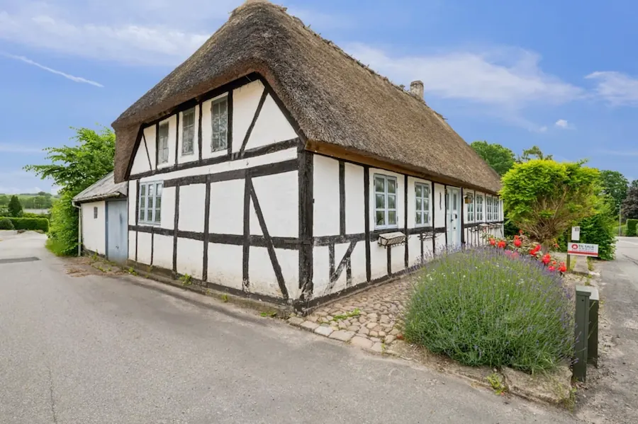

Om mig
Jeg er specialiseret pædagog, forfatter og debattør med mere end 20 års erfaring i arbejdet med børn og unge.
- Forfatter
- Specialiseret pædagog
- 20 års praksiserfaring
- Systemansvar
- Børns trivsel

Mine rødder, der kaldte mig hjem
Før titlerne var jeg en fregnet, rødhåret pige med jord under neglene og en ild, der hele tiden ville noget mere.
Min farmor skrev revyer og digte og lod ordene danse mellem alvor og det gakkede. Min far kæmpede for menneskers rettigheder. Jeg så hans ansigt på valgplakaterne, når jeg cyklede hjem fra skole.
Dengang vidste jeg ikke, hvor meget af deres fortælling jeg bar med mig. Senere begyndte jeg selv at skrive. Læserbreve, spørgsmål og ord, der ville ud, når noget ikke gav mening. Den stemme har fulgt mig ind i faget. Og den følger mig stadig.
Der, hvor fagligheden skal kunne holde til hverdagen
I mere end 20 år har jeg arbejdet med børn og unge, særligt inden for anbringelsesområdet. Tæt på børnene, familierne og den hverdag, hvor faglige beslutninger får mærkbare konsekvenser.
Min faglighed bygger på forskningsbaseret viden, systematisk observation og erfaringer fra det liv, der sjældent lader sig ordne i lige rækker.
Jeg har arbejdet med forældre i krise, med konflikthåndtering og med samarbejde på tværs af fag og instanser. Jeg har observeret og dokumenteret trivsel, adfærd og udvikling og forsøgt at forstå, hvad der var på spil, og hvad der skulle til for at skabe mere tryghed og bedre muligheder for at deltage.
Hvad fortæller barnet os gennem sine reaktioner? Hvad sker der i relationerne? Og kan den hjælp, vi har besluttet, overhovedet finde plads i det liv, den skal hjælpe?
- 20+ årmed børn og unge, særligt på anbringelsesområdet
- 0 til 23 åranbragte børn og unge, jeg har arbejdet med
- Uddannelsepædagogisk og sundhedsfaglig baggrund
- Også uddannet ifamilieterapi og relationel praksis

Jeg solgte alt
Hus, møbler, indbo, tøj og gamle arvestykker. Afstanden mellem mit menneskesyn og de rammer, jeg blev bedt om at arbejde inden for, var blevet for stor.
Jeg havde brug for at standse op og give plads til det, jeg gennem årene havde set, erfaret og forsøgt at holde fast i. Så jeg trådte ud af arbejdslivet for en tid for at skrive og dokumentere.

Faget og ilden fulgte med
Jeg købte en gammel dame af et hus fra 1700-tallet. Skæv, slidt og fuld af historie. Et sted med plads til sporene efter levet liv.
Og jeg vendte tilbage mod den muld, jeg kom fra. Til kartoffelrækkerne. Til duften af violer. Til spørgsmålet om, hvor min faglige og menneskelige ild kunne brænde uden at brænde mig selv op.
Her fandt jeg ro og ord til bogen Mens vi venter. I bogen samler jeg det, jeg gennem årene har set, erfaret og haft svært ved at tie om, og forbinder mine erfaringer med faglige perspektiver på mistrivsel og systemansvar.
Jeg bringer det levede liv ind i den faglige samtale
I dag bruger jeg mine erfaringer som forfatter, debattør og foredragsholder. Jeg skriver om menneskers møde med systemerne og om det, der sker, når hjælpen og behovet ikke finder hinanden.
Jeg er optaget af de fortællinger, der får lov til at definere et barn, en familie eller et menneskes muligheder. Hvem bliver hørt? Hvilke erfaringer tæller? Og hvad overser vi, når hverdagen skal passe ind i systemets beskrivelse af den?
Jeg ønsker at skabe plads til eftertanke og til de spørgsmål, der forpligter os til at handle. I relationerne. I samarbejdet. Og i de rammer, vi har skabt omkring børn og familier. Jeg tror stadig på, at faglighed kan flytte noget, når vi tør lade det, vi ser og ved, få betydning for det, vi gør.
Et pædagoghjerte holder aldrig helt op med at slå.Mit har fundet en anden rytme.Og ordene har fået mere plads.